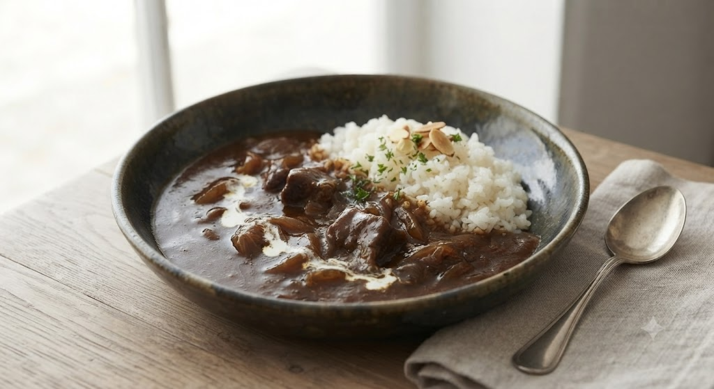
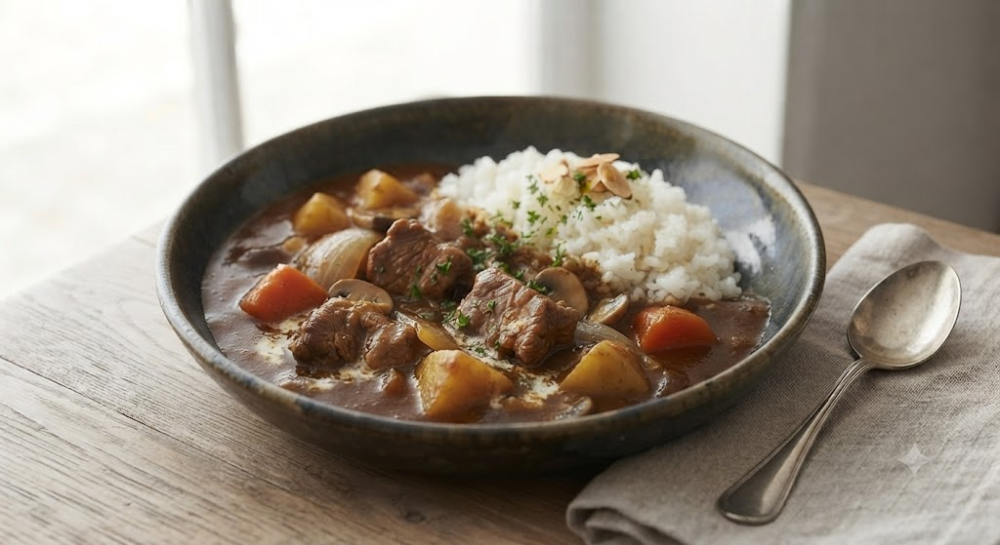
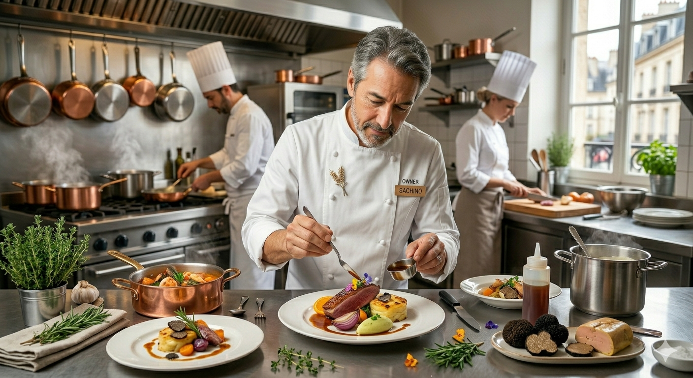

「このページを見た」とお伝えいただくか、WEBからのご予約で、
多くの常連様に愛される「甘すぎない、濃厚な一杯」をお届けします。

Best Seller
ポーク野菜カレー
野菜はナス、カボチャ、オクラ、ブロッコリーなど季節の彩りを豊かに。じっくりと煮込まれた豚肉の旨味と、五段階から選べる辛さが、最後の一口まで驚きを与え続けます。
Lunch Time
欧風カレーの真骨頂を
気軽に愉しむ
Dinner Time
厳選ワイン500本と
至高のフレンチ

16坪の店舗から始まったアンブロジア。創業以来変わらないのは、「大切な友人を我が家へ招くような」温かなおもてなしの心です。
小笠正幸・才子夫妻が作り上げるこの空間は、ある時はビジネスの接待、ある時は大切な記念日、そしてある時は自分へのご褒美として、多くの皆様に愛されてきました。
Since 2006 (Old location established earlier)
「何年かぶりに伺いましたが、変わらぬ美味しさ。ラム野菜カレーをいただきました。野菜が具沢山で大満足。食後のドリンクまで完璧です。」
— 常連のお客様より
「ディナーで利用。カウンターでの食事に最高でした。ワインの種類も豊富で、スタッフさんの対応も家庭的で温かいです。また通います。」
— デートでご利用のお客様より
「自宅での特別な時間にもアンブロジアの味を楽しみたい」
そんな皆様の温かいご要望にお応えし、現在新しいおもてなしの準備を進めております。
名物「ポーク野菜カレー」や、じっくり仕上げたフレンチデリを真空急速冷凍でお届け。ソムリエであるオーナーシェフが、それぞれの料理に合わせて特別にセレクトしたハーフボトルワインを添えた、ご自宅用のプレミアムセットです。
一皿、一滴に想いを込めて。一番町でお待ちしております。
Contact & Information
ランチ:11:30 - 14:00
ディナー:17:30 - 22:00
定休日:日曜日
〒980-0811
宮城県仙台市青葉区一番町4丁目-5-40
おの万一番町ビル3F